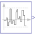

UniformNoiseNoise generator with uniform distribution |

|
Information
This information is part of the Modelica Standard Library maintained by the Modelica Association.
A summary of the common properties of the noise blocks is provided in the documentation of package Blocks.Noise. This UniformNoise block generates reproducible, random noise at its output according to a uniform distribution. This means that random values are uniformly distributed within the range defined by parameters y_min and y_max (see example Noise.UniformNoiseProperties). By default, two or more instances produce different, uncorrelated noise at the same time instant. The block can only be used if on the same or a higher hierarchical level, model Blocks.Noise.GlobalSeed is dragged to provide global settings for all instances.
Parameters (10)
| samplePeriod |
Value: Type: Period (s) Description: Period for sampling the raw random numbers |
|---|---|
| enableNoise |
Value: globalSeed.enableNoise Type: Boolean Description: = true: y = noise, otherwise y = y_off |
| y_off |
Value: 0.0 Type: Real Description: Sets y = y_off if enableNoise=false (or time |
| useGlobalSeed |
Value: true Type: Boolean Description: = true: use global seed, otherwise ignore it |
| useAutomaticLocalSeed |
Value: true Type: Boolean Description: = true: use automatic local seed, otherwise use fixedLocalSeed |
| fixedLocalSeed |
Value: 1 Type: Integer Description: Local seed (any Integer number) |
| startTime |
Value: 0.0 Type: Time (s) Description: Start time for sampling the raw random numbers |
| localSeed |
Value: Type: Integer Description: The actual localSeed |
| y_min |
Value: Type: Real Description: Lower limit of y |
| y_max |
Value: Type: Real Description: Upper limit of y |
Connectors (1)
| y |
Type: RealOutput Description: Connector of Real output signal |
|---|
Components (1)
| globalSeed |
Type: GlobalSeed Description: Definition of global seed via inner/outer |
|---|
Used in Examples (4)
|
Modelica.Blocks.Examples.Noise Demonstrates the most simple usage of the UniformNoise block |
|
|
Modelica.Blocks.Examples.Noise Demonstrates noise with startTime and automatic local seed for UniformNoise |
|
|
Modelica.Blocks.Examples.Noise Demonstrates noise with different types of distributions |
|
|
Modelica.Blocks.Examples.Noise Demonstrates the computation of properties for uniformly distributed noise |
Used in Components (1)
|
Modelica.Blocks.Examples.Noise.Utilities.Parts Synchronous machine with current controller and measurement noise |